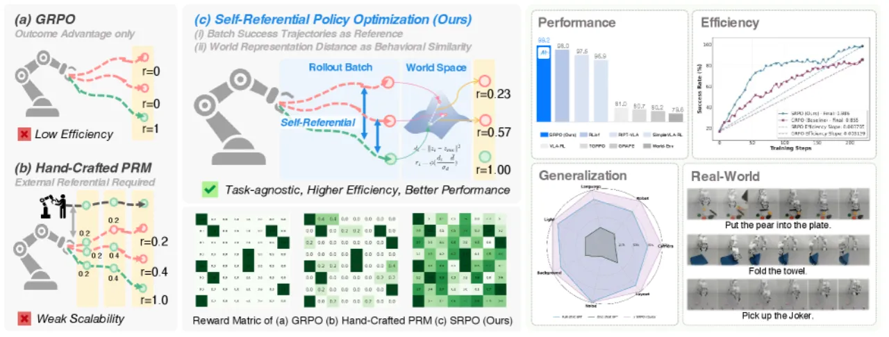
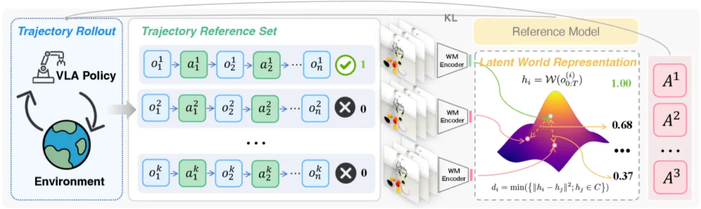
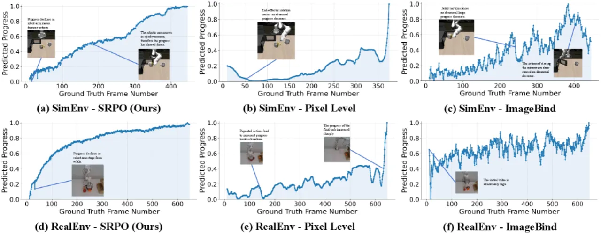
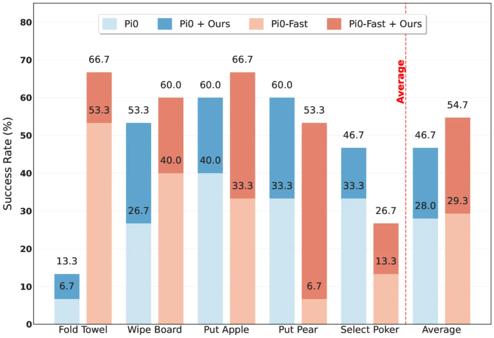
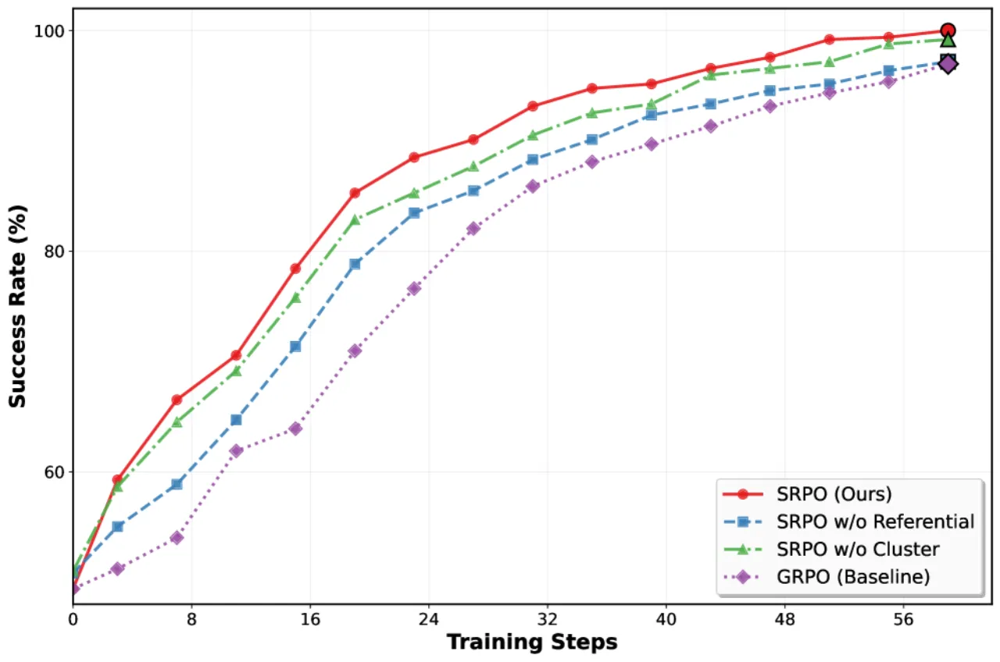

SRPO 提出一种全新的 VLA 强化学习后训练框架：以模型在 batch 内自身产生的成功轨迹作为"自参照"基准， 通过预训练视觉世界模型（V-JEPA 2）的潜在表征计算进度奖励，彻底摆脱对人工奖励设计或额外专家演示的依赖。 在 LIBERO 基准上仅需 200 步 RL 训练即实现 103% 相对提升，真实机器人实验也显著优于 SFT 基线。
当前 VLA 模型过度依赖专家演示，导致严重的 demonstration bias（演示偏差）——模型只学会复制演示中的轨迹， 无法探索更优策略。强化学习（RL）是克服这一限制的关键，但现有 VLA-RL 方法面临两大困境： 稀疏奖励（仅依赖二值成功信号，失败轨迹的信息完全浪费） 以及繁琐的人工奖励工程（需任务相关的密集奖励，难以泛化）。
"Reinforcement learning (RL) is a vital post-training strategy to overcome these limits, yet current VLA-RL methods...are crippled by severe reward sparsity."

SRPO 框架由两个核心模块组成：World Progress Reward Modeling（世界进度奖励建模） 和 Self-Referential Policy Optimization（自参照策略优化）。 前者借助预训练视觉世界模型 V-JEPA 2 在潜在空间中衡量轨迹的行为进度， 后者以此进度信号替代稀疏结果奖励驱动策略更新。

对于 batch 中的每条轨迹，V-JEPA 2 将视频片段编码为紧凑的潜在向量序列。 成功轨迹通过 DBSCAN 聚类后形成若干"参照中心"，代表不同的成功行为模式。 失败轨迹 i 到最近参照中心的 L2 距离 di 经标准化后， 通过 Sigmoid 函数 φ 映射为进度奖励：
gi = 1.0（成功轨迹）；gi = φ((di − d̄) / σd)（失败轨迹）
采用聚类而非单一参照轨迹的关键原因是：随着 RL 训练推进，成功策略愈发多样化， 单一参照会造成"后期性能收益显著衰减"，而多中心参照能持续覆盖探索空间。
与像素级世界模型（如 Cosmos-Predict2）不同，V-JEPA 2 的潜在表征天然具备跨任务迁移能力， "naturally capture transferable behavioral progress patterns"，无需任务专属微调。
策略更新沿用 GRPO（Group Relative Policy Optimization）框架， 将轨迹级进度奖励 g 替代原始结果信号，以标准化优势估计驱动梯度：
 = (g − μg) / σg
目标函数包含 clipped surrogate loss 与 KL 散度正则项，防止策略偏离 SFT 初始化过远。 "自参照"的精髓在于：参照基准完全来自模型自身的 in-batch 成功轨迹， 无需外部专家演示，随训练动态更新，天然契合当前策略的能力边界。

实验在 LIBERO（4 个任务套件：Spatial / Object / Goal / Long， 每套件 10 个任务，每任务 1 条演示）和真实 X-ARM 7 机器人上进行（5 类操作任务）。 基线模型为 OpenVLA*-One（one-shot SFT，仅单条演示训练），评估指标为任务成功率。
| 方法 | Spatial | Object | Goal | Long | 平均 |
|---|---|---|---|---|---|
| OpenVLA*-One（One-shot SFT） | 61.7 | 55.5 | 42.6 | 35.8 | 48.9 |
| + Offline SRPO | 97.5 | 91.4 | 90.1 | 91.0 | 92.5 |
| + Online SRPO | 100.0 | 99.4 | 98.6 | 98.8 | 99.2 |
Online SRPO 在 Spatial 套件上实现满分（100.0%），四套件平均达 99.2%， 较 SFT 基线提升 50.3 个百分点，代表"103% 的相对提升，无需任何额外监督"。
| 方法 | 平均成功率（7 扰动维度） |
|---|---|
| One-shot SFT 基线 | 19.4% |
| + Online SRPO | 59.6%（+40.2 pts） |
| + Online SRPO + 数据增强 | 82.1%（+51.4 pts） |
LIBERO-Plus 涵盖相机位置、机器人初始化、语言描述、光照、背景、噪声、布局 7 个扰动维度， 代表"167% 相对提升"（相对 SFT 19.4%）。
| 方法 | SC (Spearman ↑) | Mono ↑ | MMD ↑ | JS ↑ | SMD ↑ |
|---|---|---|---|---|---|
| Pixel-level | 0.125 | 0.498 | 0.274 | 0.548 | 2.100 |
| ImageBind | 0.957 | 0.837 | 0.356 | 0.408 | 18.111 |
| SRPO（V-JEPA 2） | 0.998 | 0.992 | 0.615 | 0.572 | 188.799 |
SRPO 在 Spearman 时序相关性（0.998）和单调性（0.992）上接近完美， 成功/失败轨迹分布分离度（SMD = 188.799）远超竞争方案，验证潜在世界模型表征的优越性。


SRPO 在 LIBERO 四套件上达到收敛所需步数：Spatial 79 步、Object 59 步、Goal 103 步、Long 219 步。 相较 GRPO，SRPO 展现出"steeper efficiency slope...especially for long-horizon tasks"， 长时序任务收敛速度提升尤为明显。
出于安全顾虑，真实机器人实验采用 Advantage-Weighted Regression（离线 RL 范式）， 而非模拟环境中的完整 online RL。这意味着真实场景下无法像模拟中那样进行在线探索， 可能限制自参照机制在动态多样化真实任务中的充分发挥。
SRPO 的进度奖励质量高度依赖 V-JEPA 2 所提供的潜在表征。 若目标任务域与 V-JEPA 2 预训练数据差异较大（如工业场景、水下操作等）， 潜在表征的迁移能力可能下降，进而影响进度奖励的可靠性。论文本身未对此进行系统性分析。
论文附录 E 通过 Cosmos-Predict2 像素级世界模型的实验展示了"generated videos suffer from poor scene consistency"，证明像素级方案在多样任务下泛化困难， 这也是作者选择潜在表征而非像素预测的核心依据，但同时表明 SRPO 的方法论选择受限于此类问题的存在。
SRPO 在实验中"achieves SOTA using only third-person visual observations and language instructions"， 无需腕部图像、本体感知或 3D 数据。虽然这是一个优点， 但也意味着对于依赖精细末端执行器信息的高精度操作任务，该方案尚未完整验证。